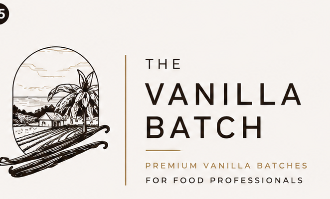
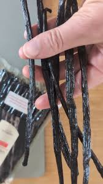
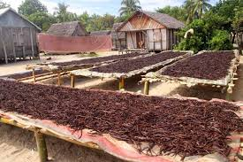
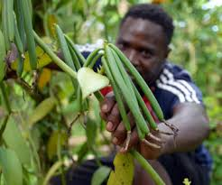
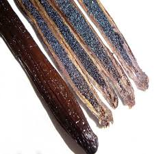

250g
1 gesloten batch
€59€236/kgBestel proefbatch
Premium vanilla batches for food professionals
Donkere, soepele en aromatische vanillebonen. Gesloten vacuüm verpakt per 250g batch, batch-gecontroleerd en scherp geleverd aan Nederlandse foodprofessionals.
250g proefbatch €59 ex. btw · Productspecificatie en batchinformatie op aanvraag




Eerste productlijn
Hoogwaardige hele vanillestokjes voor professionele toepassingen waarin echte vanille zichtbaar, ruikbaar en proefbaar moet zijn.
Onze Batch 250 bestaat uit hele Madagascar Bourbon vanillebonen. De bonen zijn donker, soepel en aromatisch en bedoeld voor ijs, patisserie, chocolade, horeca en kleinschalige foodproductie.
Wij pakken niet om, malen niet, mengen niet en openen de verpakking niet. Iedere bestelling wordt opgebouwd uit gesloten vacuümverpakte batches van 250 gram.
Foodprofessionals willen weten wat ze gebruiken. Met vaste 250g batches blijft de levering overzichtelijk, herleidbaar en praktisch voor voorraad, receptuur en kwaliteitscontrole.
Waarom Batch 250
Rechtstreeks georganiseerd vanuit de bron, gesloten geleverd voor kwaliteit. Klein genoeg om te testen, groot genoeg voor serieus professioneel gebruik.
250 gram is ideaal als proefbatch voor ijsmakers, patissiers, chocolatiers en chefs. Je test geur, structuur, smaak en verwerking zonder direct groot in te kopen.
Vacuümverpakking helpt aroma, soepelheid en vochtbalans te behouden tot het moment van gebruik. Minder risico op uitdrogen, meer controle in je voorraad.
Wij leveren hele bonen in gesloten batches. Geen ompakken, geen mengen, geen openen. Zo blijft de batch duidelijk, zuiver en professioneel herleidbaar.
We letten op geur, kleur, soepelheid, vochtbalans, zichtbare kwaliteit en batchinformatie. Productspecificatie en COA zijn op aanvraag beschikbaar.

Staffelprijzen ex. btw
Alle volumes worden opgebouwd uit gesloten 250g batches.
1 gesloten batch
€59€236/kgBestel proefbatch2 gesloten batches
€109€218/kgAanvragen4 gesloten batches
€199€199/kgStaffelprijs8 gesloten batches
€379€189,50/kgStaffelprijs20 gesloten batches
€895€179/kgOfferte aanvragen40+ gesloten batches
Maatwerkvanaf ca. €169/kgPlan adviesgesprekPrijzen exclusief btw. Definitieve prijs afhankelijk van batch, voorraad en volume. Voor structurele afname maken we zakelijke afspraken.
Toepassingen
Voor vanille-ijs, gelato, custardbases en infusies. Volle smaak, zichtbaar merg en constante batchkwaliteit.
Voor banketroom, crème brûlée, bavarois, crème anglaise, tartelettes en desserts met premium uitstraling.

Voor ganache, pralines, truffels, witte chocolade en vullingen waarin vanille subtiel diepte geeft.

Kleine professionele volumes voor desserts, sauzen, infusies en seizoensmenu’s zonder groot minimumvolume.
Voor herhaalbaarheid, batchcontrole, specificaties, voorraadzekerheid en volumeprijzen vanaf 1kg.
Premium productverhaal, duidelijke batchverpakking en zakelijke volumes voor delicatessen en foodretail.
Kwaliteit & controle
Voor professioneel gebruik gaat het om het totaalbeeld: lengte, soepelheid, aromatische intensiteit, vochtbalans, zichtbaar merg, verpakking, opslag en herhaalbaarheid per batch.
Bonen met een rijke uitstraling en goede verwerkingseigenschappen.
Een warm, klassiek Madagascar Bourbon profiel voor ijs, patisserie en chocolade.
Specificatie, batchinformatie en COA zijn op aanvraag beschikbaar.
Vacuüm per 250g, zonder openen, mengen, malen of herverpakken.
Over The Vanilla Batch
The Vanilla Batch is ontstaan vanuit de overtuiging dat premium vanille toegankelijker, transparanter en praktischer kan worden geleverd aan Nederlandse foodprofessionals.
Madagascar Bourbon vanille is een uitzonderlijk product. De kwaliteit ontstaat door de hele keten: van bloei en handbestuiving tot oogst, fermentatie, droging, sortering, rijping en transport.
Wij richten ons op overzichtelijke, gesloten batches van 250 gram. Groot genoeg voor professioneel gebruik, klein genoeg om laagdrempelig te testen en schaalbaar voor bedrijven die vaker met echte vanille werken.
Wat krijg je precies?
Zo werkt een proefbatch
Vergelijk de geur, structuur, smaak en opbrengst met je huidige leverancier. Daarna schaal je eenvoudig op naar 1kg, 2kg, 5kg of meer.
Kies voor één gesloten proefbatch.
We delen prijs, beschikbaarheid en productspecificatie.
Gebruik de bonen in ijs, patisserie, chocolade of productie.
Ga door naar 1kg, 2kg, 5kg of maatwerk.
Waarom The Vanilla Batch?
FAQ
Alleen als dit aantoonbaar gecertificeerd is, mogen we dat claimen. Voor nu gebruiken we die claim niet. Eventuele biologische certificering voegen we later toe als [PLACEHOLDER] zodra bewijs beschikbaar is.
Bourbon vanille verwijst naar Vanilla planifolia uit de Bourbon-regio, waaronder Madagaskar. Madagascar Bourbon staat bekend om zijn warme, romige en klassieke vanilleprofiel.
250 gram is praktisch voor professionals: klein genoeg om te testen, groot genoeg voor serieuze verwerking en eenvoudig op te schalen. Iedere verpakking blijft gesloten en overzichtelijk.
Vacuümverpakking helpt aroma, soepelheid en vochtbalans te beschermen. Het voorkomt ook dat we moeten ompakken of openen voordat de batch bij jou aankomt.
Bewaar de gesloten vacuümverpakking koel, droog en donker. Vermijd direct zonlicht, warmte en temperatuurschommelingen.
Ja. Bestellingen vanaf 1kg zijn mogelijk via staffelprijzen. Voor 5kg en 10kg+ maken we graag een maatwerkvoorstel.
The Vanilla Batch is primair gericht op foodprofessionals en zakelijke klanten.
Ja. Productspecificaties, batchinformatie en COA zijn op aanvraag beschikbaar.
Wij leveren uit Nederlandse voorraad. Exacte levertijd hangt af van beschikbaarheid, volume en afleveradres.
Zakelijke bestellingen op factuur zijn mogelijk na aanvraag en acceptatie.
Contact
Laat je gegevens achter. We reageren met de juiste informatie voor jouw toepassing en gewenste volume.